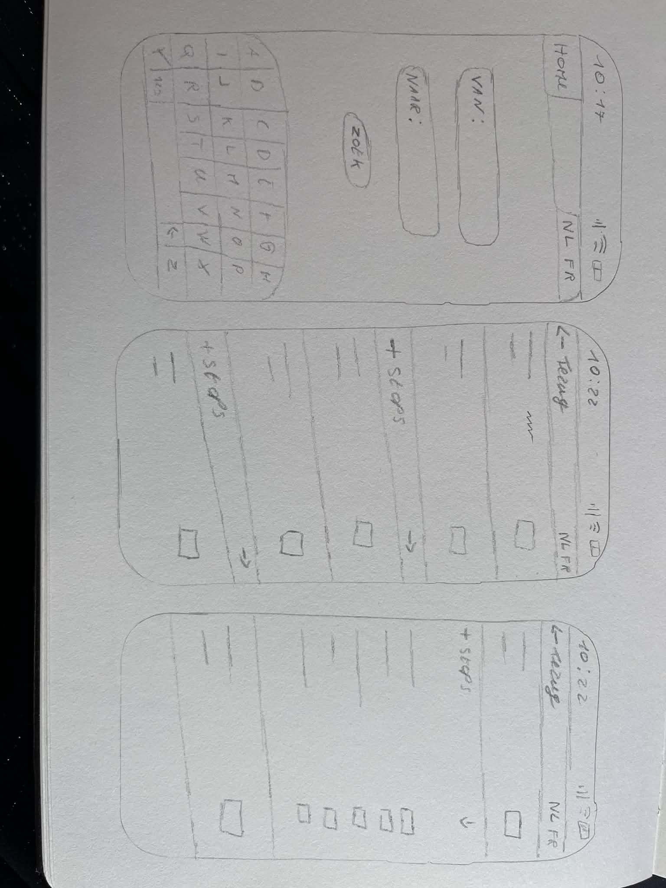
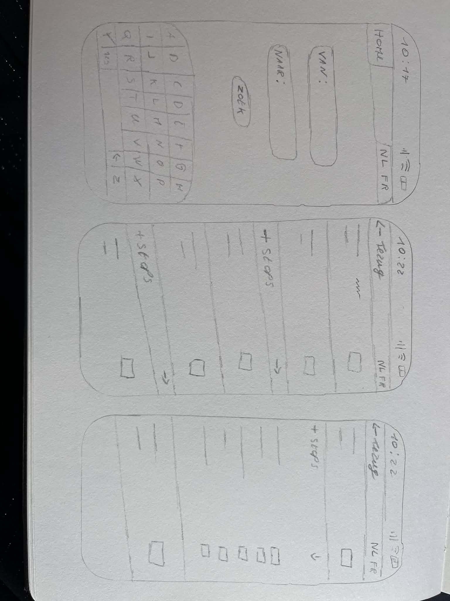

Week 10 verslag
Wat heb ik gedaan?
In deze fase ben ik gestart met het schetsen van de gsm-versie. Door deze schetsen te maken, wilde ik een beter beeld krijgen van hoe ik het ontwerp mobiel wil uitwerken en realiseren. Het schetsen hielp mij om de lay-out, structuur en inhoud af te stemmen op een kleiner scherm, zodat de mobiele versie gebruiksvriendelijk en overzichtelijk wordt.
Wat ging goed / moeilijk?
Ik vond het moeilijk om mijn bestaande lay-out en stijl om te zetten naar een gsm-versie. Door het kleinere scherm moest ik opnieuw nadenken over de plaatsing van elementen, de hiërarchie en de leesbaarheid. Dit vroeg extra aanpassingen en keuzes, maar hielp mij wel om bewuster na te denken over een gebruiksvriendelijke mobiele weergave.
Volgende week
Volgende week ga ik beginnen met experimenteren in Figma om alles correct en vlot werkend te krijgen. Daarbij wil ik verschillende oplossingen uittesten om de lay-out, stijl en interacties te verfijnen, zodat het ontwerp goed werkt en gebruiksvriendelijk is op mobiel.